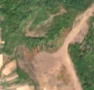
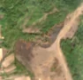

1,6 ha de pădure schimbată lângă Câmpani de Pomezeu
Între 7 septembrie 2026 și 17 septembrie 2026, pe aproximativ 1,6 ha de pădure din comuna Pomezeu, lângă Câmpani de Pomezeu, județul Bihor, imaginile Sentinel-2 arată că vegetația a dispărut sau s-a schimbat puternic. În registrul public există o autorizație de tăiere pentru acest loc.
Autorizația de tăiere
probabil cu autorizație
Am găsit o autorizație de tăiere pentru locul ăsta, dar registrul nu ne lasă să confirmăm că acoperă exact tăierea pe care o vedem.
Ce se vede în poze: În poza detaliată zona marcată are tufișuri și copaci rari, printre ei se vede iarbă, deci nu era pădure deasă. În poza «după» apare o pată închisă la culoare, cu margini neregulate, pe versantul deschis de lângă zonă, ceea ce seamănă mai degrabă cu o arsură decât cu o tăiere.


Înainte și după: Copernicus Sentinel-2, 10 m pe pixel, conturul zonei cu portocaliu. Poza detaliată (Esri World Imagery) e de acum 1–4 ani: arată ce era acolo înainte, nu tăierea.
Pe scurt
- Identificator
- 20260917_46810_22321
- Locul
- Câmpani de Pomezeu, comuna Pomezeu, județul Bihor (SIRUTA 30470)
- Coordonate (centru)
- 46.81002, 22.32115 · Google Maps · OpenStreetMap
- Suprafața
- 1,6 ha (din pixeli de 10 m; ± câțiva pixeli pe margine)
- Ultima imagine cu pădurea întreagă
- 7 septembrie 2026
- Prima imagine cu schimbarea
- 17 septembrie 2026
- Imagini în care se vede schimbarea
- 4
- Cât de sigur e semnalul din satelit
- scăzută
- Autorizația cea mai apropiată
- APV 2500140501220 · Ocolul Silvic Codrii Cămării R.A., valabilă 17 septembrie 2025 – 30 decembrie 2025, la 257 m de zonă
- Terenul
- în afara amenajamentelor silvice publicate (pășune, mal de apă sau pădure privată fără amenajament în registru)
- Pădure pierdută în jur, alți ani
- 2015, 2023 (Hansen)
- Garda Forestieră
- Oradea
Dacă vrei să verifici sau să sesizezi
- Pădurile din județul Bihor sunt în grija Gărzii Forestiere Oradea, care controlează tăierile și dă amenzile.
- Autorizația găsită în zonă e emisă de Ocolul Silvic Codrii Cămării R.A..
- Formularul Gărzii Forestiere Naționale primește sesizări și fără nume. Trimite linkul acestei pagini, coordonatele și pozele. Dacă tăierea e în desfășurare, sună la 112.
- Autorizațiile și transporturile de lemn se pot căuta în Inspectorul Pădurii.
Pagina arată ce se vede din satelit și ce scrie în registrul public; nu e o dovadă în sine.
Cum citezi zona
Linkul acestei pagini nu se schimbă. Dacă zona iese vreodată de pe hartă, pagina rămâne, cu data și cu ce știam despre ea.
Pădurea RO, zona 20260917_46810_22321: 1,6 ha, Câmpani de Pomezeu, comuna Pomezeu, județul Bihor; schimbare văzută din satelit între 7 septembrie 2026 și 17 septembrie 2026. https://iliemihai.github.io/padurea-ro/zona/20260917_46810_22321/ (consultat la [data]). Date: CC BY 4.0.
Datele zonei: GeoJSON · toate zonele: date deschise · licența CC BY 4.0.
Istoricul zonei pe hartă
Starea se poate schimba când registrul publică o autorizație sau când analistul vede poze mai bune. O ținem aici, ca un link citat să arate și ce spuneam atunci.
Pe hartă cel târziu din 5 noiembrie 2026.
- 5 noiembrie 2026 – azi · probabil cu autorizație
Detalii tehnice, pentru verificare
De ce acest nivel de încredere:
- văzută schimbată în 4 imagini diferite
- pădurea din jur e neschimbată
- AI-ul vede pădure dispărută
- văzută schimbată doar toamna, când și frunzele care se îngălbenesc pot arăta așa; o urmărim și primăvara
- în poze, zona se schimbă vizibil față de pădurea din jur
Ce a văzut analistul cu context: Poza detaliată din 2024 arată în contur un amestec de coroane și teren deschis, cu tonuri roșcat-brune de tufărișuri, lângă un versant erodat. În imaginea Sentinel-2 «după» apare o pată brun-închis, neregulată, care se întinde pe versantul gol și atinge marginea conturului, iar pădurea din jur rămâne verde, fără margini drepte de tăiere sau drumuri de colectare. Acoperirea de 55% în 2000, pășunea din jur (38%) și autorizația aflată la 257 m, fără suprapunere, nu susțin o tăiere rasă. Fără fum și cu o singură pată, încadrarea ca foc rămâne nesigură; un alunecare de teren sau curățarea pășunii nu pot fi excluse.
- Placa Sentinel-2
- 34TES
- NDVI de referință
- 0.9
- NBR de referință
- 0.68
- Scăderea în pădurea din jur
- 0.04
- Persistență
- 0.88
- NDVI / NBR după
- 0.356 / -0.04
- Analistul de zi (model)
- taiere · 0.85 · claude-haiku-5-5
- Analistul cu context (model)
- foc · 0.45
Cum se calculează fiecare: metodologia.
Pune harta zonei într-un articol
Copiază codul în articol (merge în majoritatea site-urilor de știri). Sau pune doar linkul: WhatsApp, Facebook și X arată singure poza zonei.